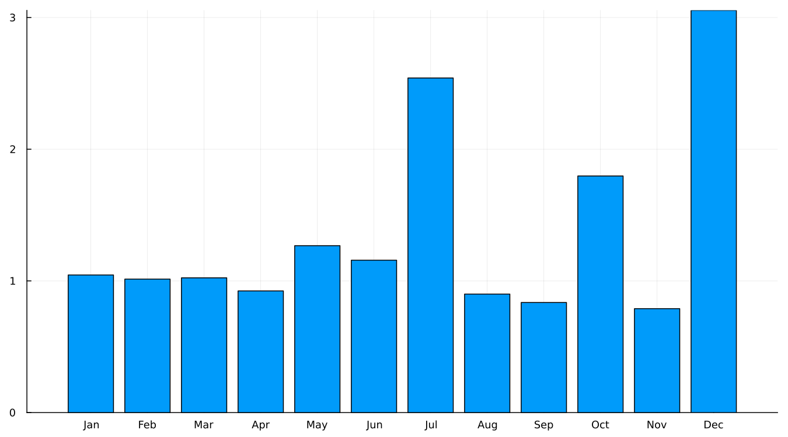
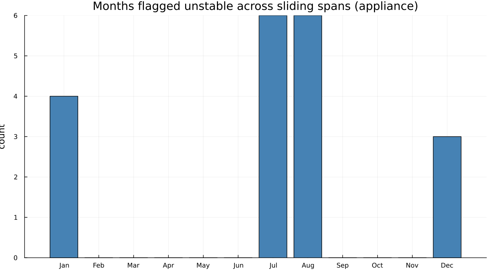
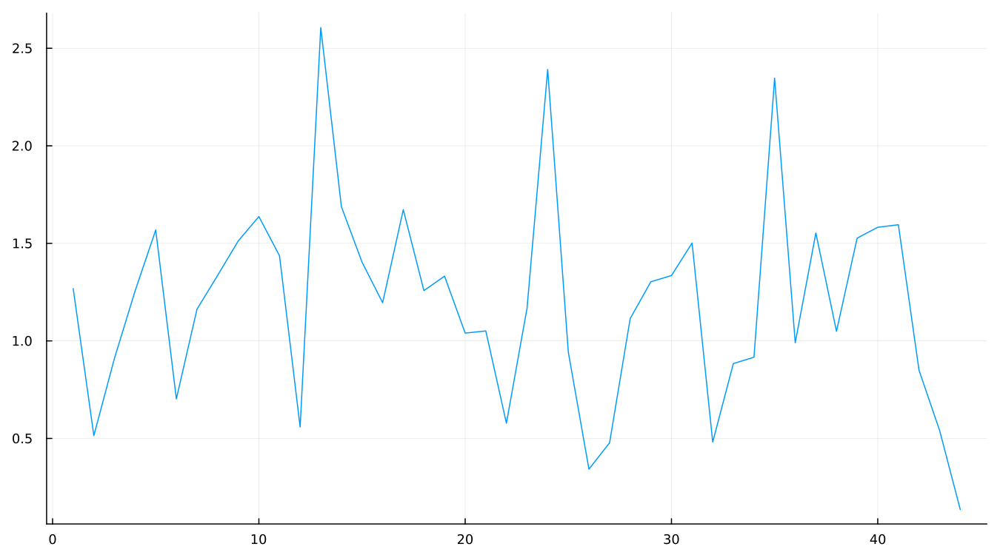
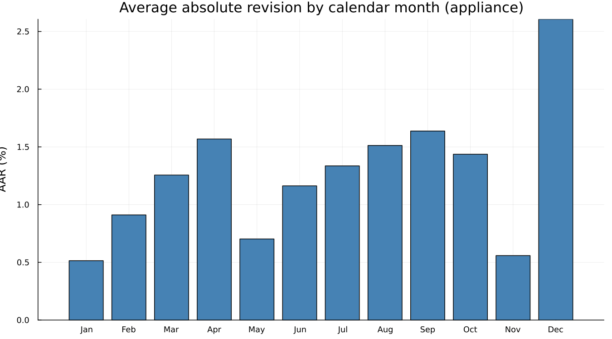

20. Stability and Revisions
Every diagnostic so far has asked some version of "is this adjustment right." Sliding spans and revision histories ask a different question entirely: will it still look like this next month? — which, for an official statistic somebody downstream is going to act on, matters at least as much as correctness at a single point in time.
This chapter uses appliance, the Census Bureau's own worked example, rather than airline — a 192-month series gives sliding spans enough overlapping windows to say something, where twelve years does not.
20.1 Sliding spans
Adjust several overlapping spans of the same series — drop a year or two off the end, adjust, repeat — and compare the estimates for whatever months are covered by more than one span. A month whose estimate swings a lot depending on which span produced it is flagged unstable. The headline percentages, read directly rather than assumed:
seasonal factor: 18% of months flagged unstable
SA percent change: 19%
trend: 18%
trading day: 14%Broken down by calendar month, using the seasonal-factor breakdown specifically:

December stands out clearly as the least stable month in this series' seasonal factor. A separate, related view — how many spans actually flagged each month as unstable, using the percent-change breakdown this time:

July and August lead here on flag count, while December leads on revision size — two related but genuinely different questions ("how often is this month a problem" versus "how large is the problem when it happens"), both worth asking rather than collapsed into one number.
20.2 Revision histories
This is Chapter 9's argument, measured formally rather than shown as a picture. Where Chapter 9 fanned out successive vintages of airline by eye, a revision history computes the actual concurrent-versus-final comparison across every available vintage of appliance and reports the average absolute revision directly:

And broken down by calendar month:

December again stands out — the same month sliding spans flagged as the least stable, from a completely independent calculation. Two different diagnostics, run on two different aspects of the same series, pointing at the same calendar month is the kind of agreement worth noticing when it happens, in the same way Chapter 18 made a point of noticing when two diagnostics disagreed.
20.3 What to do when it is unstable
A few real levers, in roughly the order worth trying them: a longer seasonal filter (Chapter 6) trades responsiveness for stability directly; fewer automatic decisions — freezing the ARIMA order or the outlier list via static — removes one source of month-to-month variation in how the adjustment is computed, not just in its output; and, ultimately, accepting that some series are simply less stable than others and adjusting publication expectations (and the concurrent-versus-forward- factor policy from Chapter 9) accordingly.
See also: Chapter 9, whose revision-fan argument this chapter measures formally. Chapter 13's static() discussion for freezing an automatically selected specification.